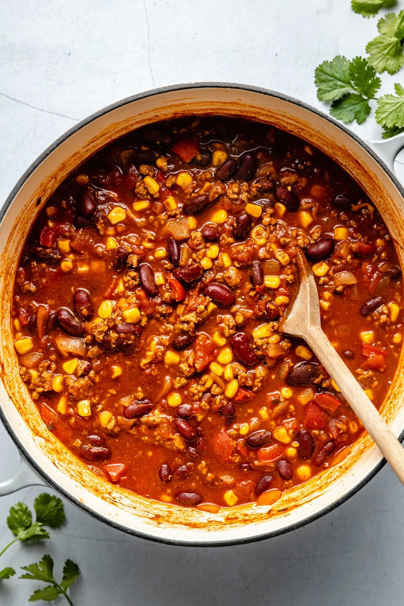

Home
Healthy Turkey Chili Recipe

This is one of my favorite dinner recipes! It is extremely simple and easy to make.
Added benefits are that it is a healthy dinner option, doesn't take much prep time,
and it tastes delicious!
Ingredients
- 1 lb Ground Turkey
- 2 Cans of Diced Tomatoes
- 1 Can of Pinto Beans
- 1 Can of Kidney Beans
- 1 Can of Hot Chili Beans
- 1 Jar of Tomato Sauce
- 1 Can of Diced Jalepenos
Instructions
- Heat pan on medium-high
- Add ground turkey and seasonings to the pan
- Add diced vegetables and cook until ground turkey is thoroughly cooked
- Move gorund turkey and vegetables to a crockpot
- Add diced tomatoes, tomato sauce, and chili beans to crockpot
- Set crockpot on high for 1 hour
- Change crockpot to low and let cook for 5-6 hours
- Add pinto beans, kidney beans, and diced jalepenos to crockpot
- Let cook for another 30 minutes to an hour before serving
- Optional: Add sour cream and/or shredded cheese to personal bowl!